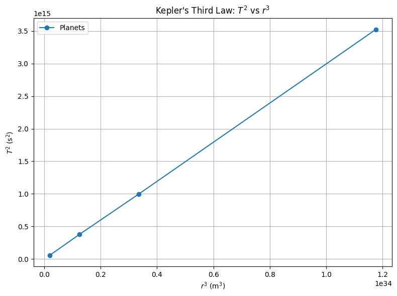

Gravity Problem 1
Orbital Period and Orbital Radius
Motivation
The relationship between the square of the orbital period and the cube of the orbital radius, known as Kepler's Third Law, is a cornerstone of celestial mechanics.
This fundamental relationship enables us to determine planetary motions and understand gravitational interactions on both local and cosmic scales.
Derivation of Kepler's Third Law
Consider a satellite or planet of mass \(m\) orbiting a much larger central body of mass \(M\) in a circular orbit.
The gravitational force provides the necessary centripetal force:
Canceling \(m\) and simplifying:
The orbital period \(T\) is the time it takes to complete one full orbit:
Substitute \(v\) into the expression:
Squaring both sides:
This is the classical form of Kepler’s Third Law:
Verification Using Planetary Data
We use data from the inner planets of the solar system: Mercury, Venus, Earth, and Mars.
import matplotlib.pyplot as plt
import numpy as np
# Constants
AU = 1.496e11 # Astronomical Unit in meters
G = 6.67430e-11
M_sun = 1.989e30
# Orbital radii in AU and converted to meters
radii_au = np.array([0.39, 0.72, 1.00, 1.52])
radii_m = radii_au * AU
# Orbital periods in Earth days converted to seconds
periods_days = np.array([88, 225, 365.25, 687])
periods_sec = periods_days * 24 * 3600
# Compute T^2 and r^3
T_squared = periods_sec ** 2
r_cubed = radii_m ** 3
# Plot
plt.figure(figsize=(8, 6))
plt.plot(r_cubed, T_squared, 'o-', label='Planets')
plt.xlabel('$r^3$ (m$^3$)')
plt.ylabel('$T^2$ (s$^2$)')
plt.title(\"Kepler's Third Law: $T^2$ vs $r^3$\")
plt.grid(True)
plt.legend()
plt.tight_layout()
plt.show()
 This plot should display a linear relationship, confirming the dependence:
Calculating the Mass of the Sun
From the rearranged form of Kepler's Third Law:
Using Earth's orbital parameters:
- \(r = 1.496 \times 10^{11} \ \text{m}\)
- \(T = 365.25 \ \text{days} = 3.156 \times 10^7 \ \text{s}\)
Plug in values:
This result matches the known mass of the Sun.
Extension to Elliptical Orbits
Kepler’s Third Law applies to elliptical orbits as well, where \(r\) is replaced by the semi-major axis \(a\):
Summary
- Derived \(T^2 = \frac{4 \pi^2 r^3}{G M}\)
- Verified \(T^2 \propto r^3\) using Solar System data
- Estimated the mass of the Sun
- Generalized to elliptical orbits